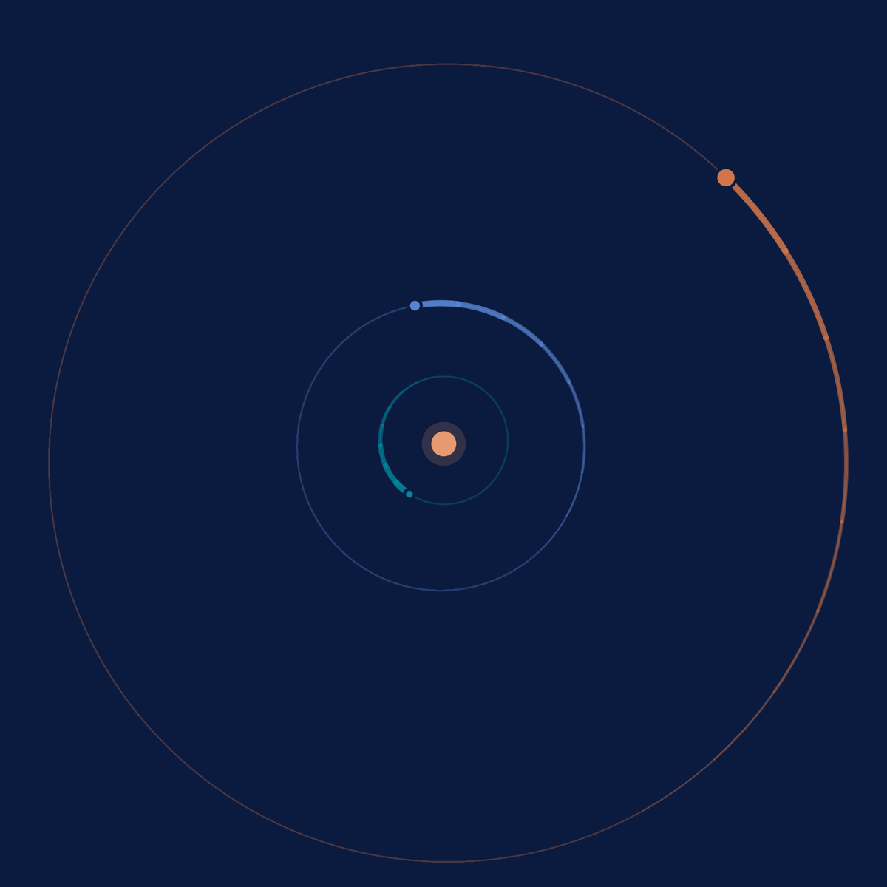
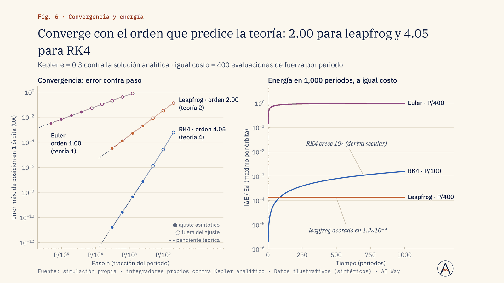
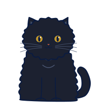
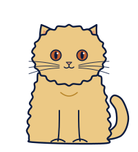
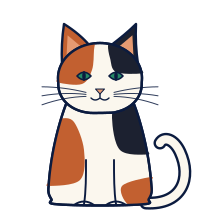

Inicio / Laboratorio
/laboratorio
Lo que hacemos sin cliente
Proyectos propios donde probamos el método con la misma regla que aplicamos a todo lo demás: validar antes de mostrar y publicar también lo que no salió.
Proyecto de marca · explorador astronómico de escritorio
Asteria: validar antes de mostrar
Un viaje en 3D por el sistema solar, las estrellas y las galaxias, con 7 simulaciones físicas que la aplicación solo muestra si pasan su validación.
Las posiciones se comparan con el servicio oficial de efemérides y la conservación de la energía se vigila en cada simulación. Si una prueba falla, la simulación no se enciende.
Fuente: validaciones registradas del proyecto. Masas puntuales, sin relatividad; no son predicciones observacionales.

Demo científica
Kepler: el integrador que no se escapa de la órbita
Tres integradores propios (Euler, RK4 y leapfrog) contra la solución analítica de una órbita de Kepler. La prueba no es que la órbita se vea bonita: es que cada método converja con el orden que predice la teoría y que la energía no se fugue.
Euler se escapa; el integrador simpléctico se queda en la órbita
Fuente: simulación propia · integradores propios contra Kepler analítico · Datos ilustrativos (sintéticos) · AI Way


La demo completa (con el detector de cuentas coordinadas) está en Modelos a medida con rigor de laboratorio.
Investigación propia
La honestidad también es un resultado
Un regularizador para redes neuronales derivado de la dinámica de un sistema cuántico de dos niveles, calculado de forma clásica, aplicado a extraer opiniones por aspecto en español, con controles y pruebas automatizadas.
Resultado negativo documentado sin maquillar: la pérdida bajó ~13×, pero el decodificador no recuperó la información. No reclamamos ventaja cuántica.
Lo publicamos porque un resultado negativo bien diagnosticado ahorra tiempo y dinero, propio y ajeno.
/laboratorio · el equipo de supervisión
Cuatro partículas, criterio dudoso
Ningún experimento de este laboratorio ha salido sin que alguno de ellos se siente en el teclado.


